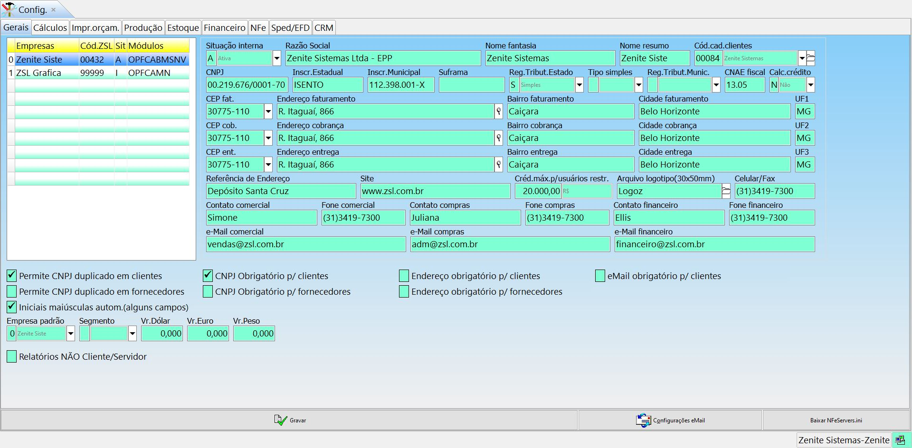
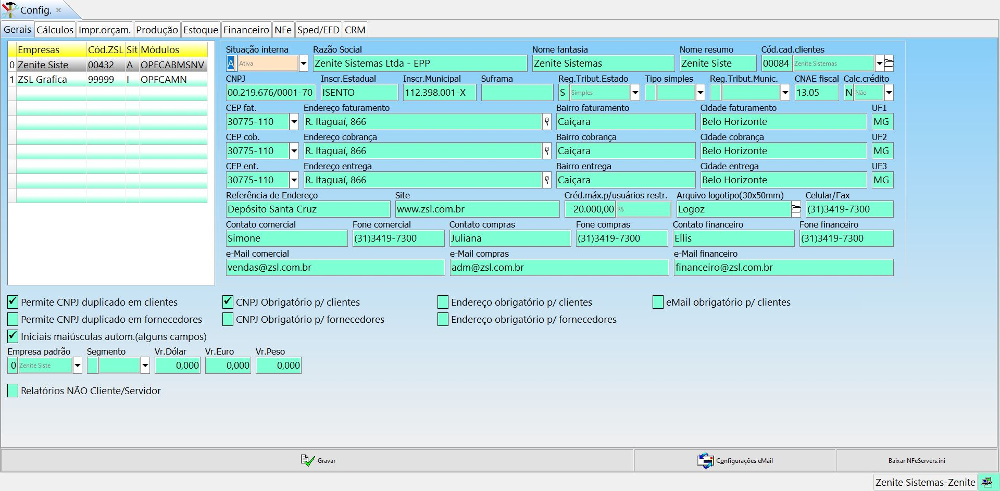
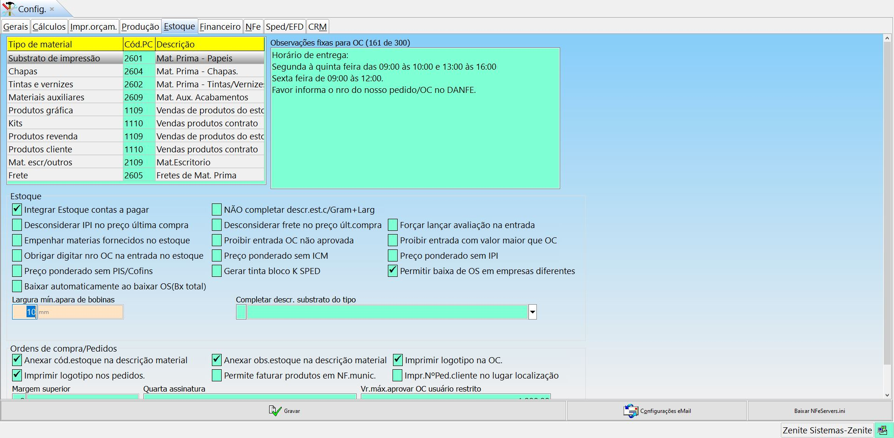

Gerais

Situação interna: Situação da empresa. Ativa ou desativada.
Suframa: Código da Superintendência da zona franca de Manaus.
Reg.Tribut.Estado: Define o regime de tributação da empresa.
Tipo simples: Para empresas do tipo "S.Simples" temos os subtipos possíveis com ME, EPP e Excesso SRB (Faturamento superior a R$X).
Reg.Tribut.Munic: ???
CNAE fiscal: Informação de nota municipal, encontrada no site do municipio com o login do cliente.
Cálc.crédito: ???
Créd.máx.p/usuários restr: ???
Arquivo logotipo(30x50mm): Vincula a imagem usada na carta proposta (máx 35Kb).
Contato comercial | Fone comercial: Os endereços e contatos de comercial, sairão na carta proposta do orçamento.
Contato compras | Fone compras: Os endereços e contatos de compras, sairão na ordem de compra.
Contato financeiro | Fone financeiro: Os endereços e contatos do financeiro, sairão na carta de cobrança.
Permite CNPJ duplicado em clientes: Permite cadastrar mais de um cliente com o mesmo CNPJ/CPF.
Permite CNPJ duplicado em fornecedores: Permite cadastrar mais de um fornecedor com o mesmo CNPJ/CPF.
Iniciais maiúsculas autom.(alguns campos): Deixará siglas em maiúsculo automaticamente.
CNPJ obrigatório p/ clientes: Impossibilita o cadastro de clientes sem o CNPJ.
CNPJ obrigatório p/ fornecedores: Impossibilita o cadastro de fornecedores sem o CNPJ.
Endereço obrigatório p/ clientes: Impossibilita o cadastro de clientes sem o endereço.
Endereço obrigatório p/ fornecedores: Impossibilita o cadastro de fornecedores sem o endereço.
eMail obrigatório p/ clientes: Impossibilita o cadastro de clientes sem o eMail.
Empresa padrão: Define a empresa padrão considerada pelo sistema.
Segmento: Informa o segmento da empresa selecionada.
Vr.Dólar | Vr.Euro | Vr.Moeda4: Indica a cotação da moeda (sempre será informado manualmente).
Cálculos

Prazo de pagamento padrão: Define o prazo de pagamento padrão.
A combinar =: Define o prazo padrão a combinar.
Prazo máximo: Define o número máximo de dias que o prazo de pagamento pode se estender para usuários restritos.
À vista se valor menor: ???
Orçam. mínimo: O valor dos orçamentos nunca será menor que o valor definido neste campo.
MU padrão: Markup padrão considerado nos orçamentos.
MU mínimo | MU máximo: Define o MU mínimo e máximo, não podendo ser ultrapassado.
MU preferencial: Define o MU que o sistema irá considerar, se o MU do cad.cliente, do cad.agência ou o maior dos dois.
Vendedor | Agência | Interna: Define a comissão padrão.
Juros/mês: Padroniza os juros e a correção/mês que serão usados nos orçamentos.
%Créd PIS+Cofins sobre: ???
Créd PIS/Cofins sobre: ???
Preço Kg apara: Define o preço por KG da apara e aplica um desconto no custo do produto baseado nesse valor.
Validade proposta: Validade padrão das propostas.
"Resposta em" após: Tempo padrão das respostas do cliente nos orçamentos.
"Resposta em" obrigatória: ---
Unidade de medida: Define o padrão de medidas do sistema.CM ou MM.
Aprov.apara digital por: ???
Não aproveitar apara digital: ???
Máquina verniz: ???
Cód. CTP automático: ???
Cód. CC gravação: ???
Custo gravar chapa: ???
Custo gravar tela: ???
Código verniz base d'água: ???
Código verniz UV: ???
Código capa para blocos: Define o substrato que servirá de capa para os orçamentos de bloco. Caso não use capa, basta apagar esse campo.
Abater CA da CV | CE da CV | CA da CE: Irá abater o % da primeira comissão sobre o % da segunda comissão. EX: 20% de CA e 5% da CV = 0,2 * 5 = 1 -> 5-1 = 4. Ou seja, A comissão do vendedor - comissão da agência = 4.
Dividir juros com vendedor: ???
Abater frete das comissões: Irá abater o valor do frete ao gerar as comissões.
%correção mês sobre serviço 3os: ???
%correção mês sobre produção: ???
%correção mês sobre mát.prima: ???
Vendedor obrigatório | Cliente obrigatório: Obriga a vinculação de um vendedor e cliente para gerar as OSs.
Ocultar CE na tela: ???
Não considerar TJ no MURe: ???
Cálcular tinta impressora 3os: ???
Calcular uma chapa/via F.Contínuo: ???
Créd IPI se ICM no orçamento: ???
CTP autom.todos planos: ???
Desvincular funcionários/RKW: Desvincula os cadastros dos funcionários do RKW. Se essa opção estiver marcada, o mapa de custo não será alterado quando houver mudanças nos salários ou funcionários novos. Para lançar os salários manualmente use "RKW > Centros custos reais > alterar > Obter salários".
Sugerir mont.múlt4 pgs Livros/Revistas: Para orçamentos de livros e revistas o sistema irá sugerir uma montagem que seja múltipla de 4.
Cálc.tempo min.impressão por plano: ???
Limpar a faca se alterar Mont./medida(flexo): ???
Não sugerir TR cores frente <> verso: ???
Permitir bobina em off-set plana: ???
Calcular formatos irregulares: ???
Pr.unitário máximo 4 casas: ???
TABELA {
Impressora: ???
Acerto: ???
1 cor: ???
Descrição: ???
Cores: ???
Descrição: ???
Especial: ???
Descrição: ???
%1cor: ???
%2cor: ???
%3cor: ???
%4cor: ???
%Esp: ???
}
Impr.Orçam.
Imprimir qtd.substrato se fornecido: ---
Imprimir qtdade digitada no plano: ---
Rodapé layout fixo no final página: ---
Imprimir orçamentista layout fixo: ---
Imprimir pr.entrega se não digitado: ---
Imprimir "frete incluso": ---
Não impr.dados empresa layout fixo: ---
Imprimir razão cliente layout fixo: ---
Imprimir empresa optante simples: ---
Não imprimir logo: ---
Margem sup.pré-cálc.: ---
Frase se CTP não for calculado: ---
Frase após prazo entrega: ---
Nome arq.orç.PDF: ---
Layout padrão: ---
Descr.layout 1 | 2 | 3: ---
e-Mail do orçamento: ---
Quadrados layout fixo: ---
Saudação na abertura: ---
Observações fixas para layout da carta: Texto que sairá na carta proposta.
Título das condições de fornecimento: ---
Condições gerais de fornecimento [anexo no final da carta]: ---
Texto para eMail em PDF: ---
Produção

Copias OS: ---
Margem sup: ---
Espaçamento: ---
Cabeçalhos: ---
Marg.sup.prot: ---
Marg.esq.prot: ---
Cód.PC serviços de 3os: Permite vincular os serviços de terceiros a um plano de contas. Caso não esteja preenchido, não será possível preencher “Dt.1° pagamento” e “parcelas” nas etapas da OS. Isso impossibilita que o valor do serviço vá para o CP.
Emitir OS sem previsão cliente: ---
Usar controle de crédito: ---
Checar validade proposta ao emitir OS: ---
Obrigar comissionado se houver %: ---
Obrigar comiss.interno se houver %CI: ---
Não permitir empresa dif. orçamento: ---
Obrigar vínculo materiais c/estoque: ---
Desmembrar tintas pelo maior n° cores: ---
Imprimir tintas=Sim ao incluir: ---
Baixar etapas PCP ao expedir OS: ---
Ocultar horas previstas no apontamento: ---
Apontar motivo da parada: ---
Apontar nro dos cadernos ou lado: ---
Avisar se etapa precedente não concluída: ---
Não inserir OS no PCP ao incluir: ---
Não cadastrar precedências de etapas ao incluir OS: ---
Não calcular precedências acabamentos: ---
Não calcular nenhuma precedência: ---
Deptos: ---
Tempo previsto: Imprimi o tempo previsto na OS.
Matéria prima prevista: Imprimi a matéria prima na OS.
Desenho dos planos: Imprime ou não, os desenhos dos planos.
Programação de entrega: ---
Descrição+Obs. nos materiais estoque: ---
Não imprimir contato na OS: ---
Não imprimir nome cliente OS 3os: ---
Valor na OS 3os: Imprime ou não, o valor dos serviços nas OSs de 3os.
Ficha téc.mateirial se existir e vinculado à OS: ---
Baixar OS cadastro cliente incompleto: ---
Descrição completa na NF: ---
Recalcular Etapas/M.Prima pós-cálculo: ---
Não permitir atualizar PV estoque na bx: ---
Não imprimir imagem desenvolvimento: ---
Laudo técnico: ---
L. Téc.Responsáveis: ---
L. Téc.eMail: ---
Dir docs.Desenv.: ---
Gerar expedição ao baixar: ---
Estoque

Tipo de material (tabela): ---
Observações fixas para OC: ---
Integrar Estoque contas a pagar: ---
Desconsiderar IPI no preço última compra: ---
Empenhar materiais fornecidos no estoque: ---
Obrigar digitar nro OC na entrada no estoque: ---
Preço ponderado sem PIS/Cofins: ---
Baixar automaticamente ao baixar OS(Bx total): ---
Largura mín.apara de bobinas: ---
NÂO completar descr.est.c/Gram+Larg: ---
Desconsiderar frete no preço últ.compra: ---
Proibir entrada OC não aprovada: ---
Preço ponderado sem ICM: ---
Gerar tinta bloco K SPED: ---
Completar descr. substrato do tipo: ---
Forçar lançar avaliação na entrada: ---
Proibir entrada com valor maior que OC: ---
Preço ponderado sem IPI: ---
Permitir baixa de OS em empresas diferentes: ---
Anexar Cód.estoque na descrição material: ---
Imprimir logotípo nos pedidos: ---
Margem superior: ---
Anexar obs.estoque na descrição material: ---
Permite faturar produtos em NF.munic: ---
Quarta assinatura: ---
Imprimir logotípo na OC: ---
Impr.N°Ped.cliente no lugar localização: ---
Vr.máx.aprovar OC usuário restrito: ---
Financeiro
Tipo de conta: ---
Tipo cobrança: ---
UF: ---
%Multa: ---
%Juros/mês: ---
Protestar: Esta definição Irá para a tela de boleto e para a remessa automaticamente.
Moeda 4: ---
Usuário resp.pgto boleto Zênite: ---
Endereço cliente no boleto: ---
N°Caixas balcão: ---
%Desc.Max.balcão: ---
Desconto NF altera comissão Vend/Esp/Interna: ---
Desconto CR altera comissões Vend/Esp/Interna: ---
IPI base cálculo de comissão: ---
Abater Desp.acessória/seguro das comissões: ---
Não permitir carregar pré-faturamento de empresa diferente da OS/Pedido: ---
Imprimir logo em vendas balcão: ---
Ao importar CT e importar tag "remetente" como fornecedor: ---
Acrés. CR altera comissões Vend/Esp/Interna: ---
% Inflações últimos anos: ---
NFe

NF padrão: ---
Ambiente NFe: ---
Versão NFe: ---
Fuso: ---
Hor.verão: ---
Drive NFe: Define o disco em que as XMLs serão salvas.
Certificado+Assinar: São padrões de assinatura para verificação dos certificados. A primeira opção é a mais usada, mas pode-se alterar para tentar enviar as NFs em último caso.
Frete padrão: ---
IPI no ICM: ---
Permite ISS NFe: ---
Pr.Tot.Descr.NFSe: ---
Fone sem fio: ---
IM com fio: ---
CEP com "-": ---
Impr.todos Impostos NFSe: ---
Arredonda ISS: ---
Forma pg padrão: ---
Obrigar forma.pg NFe: ---
%ISS: ---
%Red.ISS: ---
%ICMS: ---
%PIS: ---
%Cofins: ---
PIS/Cofins NFSe: ---
%Ret.CSLL: ---
%IR reter: ---
%Out.Serviços: ---
%Out.Indústria: ---
%Out.revenda: ---
%Red.ICMS: ---
IPI no ICMS: ---
%Créd.ICMS SN: ---
%Dif.ICMS: ---
Modalidade BC ICMS: ---
Modalidade BC ICMS ST: ---
Exc.ICMS PIS/Cofins: ---
Contr.IPI: ---
vIPIDevol: ---
CFOP padrão NFe: ---
CFOP padrão NFSe: ---
NCM padrão: ---
Serviço padrão NFSe : ---
Cód.Reg.Esp.: ---
Nat.oper.padrão NFSe: ---
Cód.trib.padrão NFSe: ---
Cód. caixa padrão: ---
Cód. conta padrão: ---
Frete total NF: ---
NF Mun.conjunto NFe: ---
NFe de serviço: ---
T.Emissão NFe: Define o tipo de emissão da NF. Os tipos que não forem "normal", são tipos de contensão usados quando a SEFAZ está fora do ar.
CRST: ---
Série NFe: ---
Série NFCe: ---
N°Prox.NFCe: ---
Série RPS: ---
N°Lote NFe: ---
N°Lote RPS: ---
Vr.ISS na NFSe: ---
CNPJ/CPF autorizado XML: ---
Ident.CSC: ---
CSC(Cód.Segurança Contribuinte) p/NFCe: ---
SOAP/HTTP nome usuário(@usrname): ---
SOAP/HTTP senha(@usrpw): ---
SOAP/HTTP param.#1(@param1): ---
Mensagem retenção ISS: ---
Mensagem crédito ICMS simples: ---
Orientação: ---
Imprimir em: ---
Não imp.logo/emp.: ---
Fonte cabeç.: ---
Fonte itens: ---
Marg.sup |esq | inf | dir: ---
Arq.logotipo: ---
Impressora NFe: ---
Impressora NFCe: ---